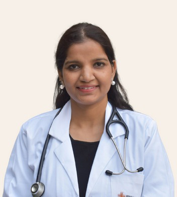

About
Dr.Kusum Lata
MD - Obstetrics & Gynaecology, MBBS Laparoscopic Surgeon (Obs & Gyn),Gynecologist,Obstetrician 17 Years Experience Overall (12 years as specialist)
Dr. Kusum is a renowned Gynecologist and Laparoscopic Surgeon. She has vast experience of various premiere institutes of North India like PGI, Chandigarh, AIIMS New DELHI & PGIMS Rohtak. She completed her post-graduation (MD) in Obstetrics & Gynecology from prestigious apex institute PGIMER, Chandigarh. She has been trained from All India Institute of Medical Science and served as a consultant in AIIMS, New Delhi and treated huge number of women due to her vast knowledge of every kind of gynecological problem. She has served as a faculty in PGIMS Rohtak also. She has good experience in managing high-risk cases in Obstetrics and Gynecology, infertility, adolescent health issues.